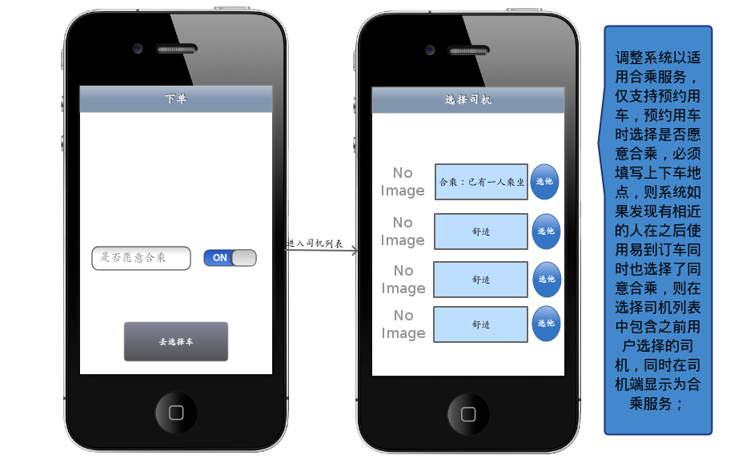
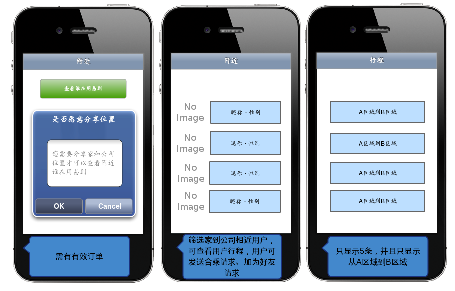
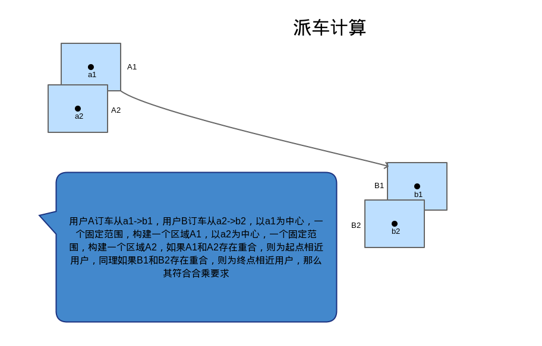

张春生
2014年8月12日



预计周期3个月
ios客户端 2人 android客户端 2人 系统端 2人 openapi 1人 测试 2人 司机端 2人
资金 = 11*30*3*400 = 396000
第一阶段：调整下单流程，增加合乘选项；调整派单流程，增加合乘派单
第二阶段：分享位置可以查看附近用易到的用户，可发送合乘请求、可以聊天、可以加好友，用户自行约定合乘
第三阶段：积分系统、完成订单获得积分，积分到达一定分数才可查看附近用易到的用户